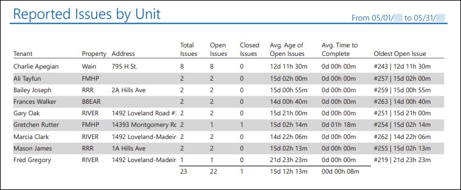
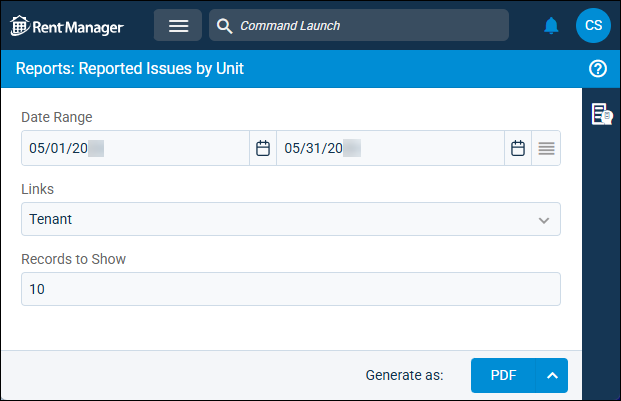

Source: https://rmxhelp.rentmanager.com/Topics/Express/Other/Reports/Reported-Issues-by-Unit.htm
Reported Issues by Unit (Report)
The Reported Issues by Unit report displays the total open and closed issues linked to tenants or units over a date range. The report calculates the average length of time it takes to close issues for a tenant or unit to help you track how quickly your staff is resolving issues. It also displays the tenants or units with the greatest number of issues to help you identify patterns and recurring problems.
Issue links to tenant and unit accounts are examined when calculating the report results.
Related Privileges
| Group | Privilege | Column |
|---|---|---|
| Letter/Email Templates/Reports/Packets | Run reports | Enabled |
Additionally, on the Reports tab, you must have access to Reported Issues by Unit.
For more information, refer to Control User Access.
To view the Reported Issues by Unit report, do the following:
-
Go to
 arrow_forward Services arrow_forward Service Manager arrow_forward Reported Issues by Unit.
arrow_forward Services arrow_forward Service Manager arrow_forward Reported Issues by Unit.
The Reports: Reported Issues by Unit page displays. -
Adjust the report options as desired. Each option is described below.
-
Generate the report in your desired file format(s).
Related Preferences
Reports may look different depending on whether or not the Use modernized report style system preference is enabled. For more information, refer to General Report Options (System Preferences).

Report Options
The report options described below determine what data displays in the report.

Date Range
Enter or select the date range to determine the data that displays in the report.
In the Date Range section, set the From and To dates for which the report should examine data.
These fields automatically populate with today’s date. Enter a different date or select a date from the calendar. Alternatively, adjust the dates using the available preset buttons or click  to open more options for setting a date range.
to open more options for setting a date range.
Links
Select an option to determine which service issues display in the report results. For more information about linking to entities, refer to Add an Issue Link.
| Option | Description |
|---|---|
|
Tenant |
Tenants with the greatest number of issues linked to their account display. |
|
Unit |
Units with the greatest number of issues linked to the entity display. |
Records to Show
Edit to determine the maximum number of tenants or units to display in the report. This value is set to 10 by default.
Report Results
The report results are described below including, if applicable, section, column, and subreport descriptions.
Report Header
The report header displays the report name and key information selected in the report options, such as date information and which properties were examined in the report.
Column Descriptions
The columns that display in the report are described below.
| Column | Description |
|---|---|
|
Address |
The Default address of either the tenant or unit. |
|
Avg. Age of Open Issues |
The average length of time that an issue has remained open for each tenant or unit. This is calculated by dividing the number of open issues for each tenant or unit by the sum of the age of all open issues to display the average open age. At the bottom of the column, the overall average for all issues linked to the tenants and units in the report results is calculated using the following formula: Total = All Issues in the Report / Total Age of All Issues in the Report |
|
Avg. Time to Complete |
The average length of time that it takes to close an issue for each tenant or unit. The average is calculated by adding the total time spent on all closed issues and then dividing the total number of closed issues by the sum total time spent on all issue. At the bottom of the column, the total is calculated by dividing the total closed issues that display in the report by the sum of all closed issue completion times that display in the report. Total = All Closed Issues in the Report / Sum of All Completion Times of Closed Issues in the Report |
|
Closed Issues |
The total number of issues linked to the tenant or unit that were closed for the tenant or unit during the date range. The total displays at the bottom of the column. |
|
Oldest Open Issue |
The age of the oldest open issue for each tenant or unit. If a tenant or unit does not have an open issue in the date range, None Open displays. |
|
Open Issues |
The total number of issues within the report date range that are still open as of the final day of the date range. The total displays at the bottom of the column. |
|
Property |
The property short name linked to either the tenant or unit. |
|
Tenant/Unit |
The tenant name or unit name, depending on the report option selection in the Links field. |
|
Total Issues |
The total number of issues within the date range. The total number of issues in the report results displays at the bottom of the column. |